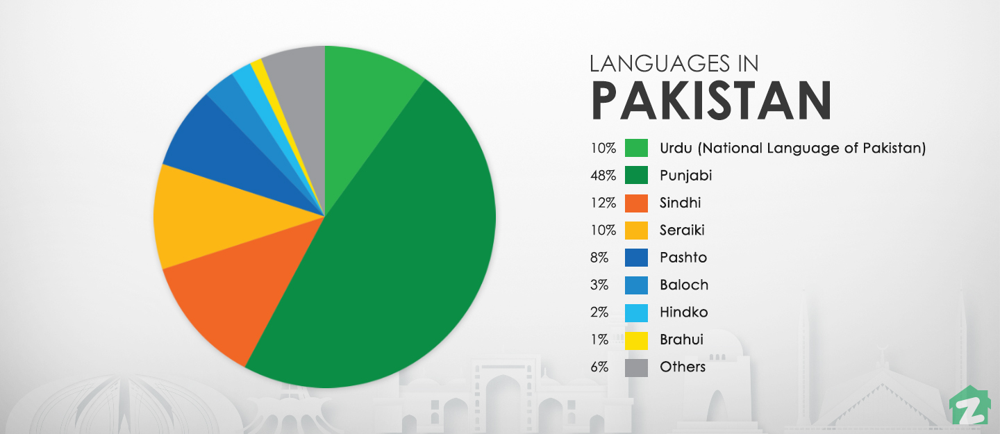

Language
Flag

- Pakistan has two official languages: Urdu and English.
- So different from each other, they have both been recognised as the official languages of the country and above all with the aim of unifying the country's solidarity.
- Although in Pakistan, the Urdu language was preferred over the others and is usually considered the 'main' or 'official' language of the country, today it has not yet been as successful as hoped and the small percentage of speakers are mainly found in the urban centres of the large metropolises, such as Islamabad, Hyderabad and Karachi. Urdu is closely related to Hindi but is written in an extended Arabic alphabet rather than Devanagari. Urdu also has more loans from Arabic and Persian than Hindi does.
- Due to British colonial rule, English is still recognised as the official language of Pakistan. However, it is not widely used. English was actually chosen as a transitional language, in the meantime for Urdu to finally take hold as Pakistan's most widely spoken language. However, this never really happened, and today English remains in common use within the house and informal circles of the urban elite but is also applied to talk business and in government acts.
- Despite the two languages being recognised as official, Pakistanis apply other languages much more in everyday use. You will be much more likely to hear them communicating with each other, chatting or saying something in one of these four secondary languages, rather than Urdu or English.
- Punjabi: Among the four, it is definitely the most widely used. In fact, over 44% of the Pakistani population speaks Punjabi as their mother tongue. The question arises as to why it was not decided to use Punjabi in Pakistan as the official language, and the answer is easily said: precisely because Punjabi is an Indo-Aryan language, as opposed to Urdu which is the Islamic language par excellence, and choosing it would not have shown a tendency to lean more towards one or the other 'faction' than those within the country.
- Pashto: This is among the languages spoken in Afghanistan, a country that borders Pakistan and of which Pashto is the official language. 15.4% speak it as their mother tongue, and it is especially used in the northern regions of Balochistan and in the Federally Administered Tribal Areas. It is also the most widely spoken East Iranian language, with 60 million speakers spread mainly between Afghanistan and Pakistan. Pashto also boasts a rich literary tradition, with many poets using it to create their works.
- Sindhi: This is the first language spoken mainly by Pakistanis living in the province of Sindh, with a percentage of 14.5. There are many doubts about its origin, but most scholars maintain that Sindhi derives directly from Sanskrit, albeit with a strong Arabic influence.
- Balochi: This is the north-western Iranian language spoken in Iran, Afghanistan and in Pakistan, where Balochi is used by 4% of the population. The people who use it are mainly concentrated in the province of Balochistan.